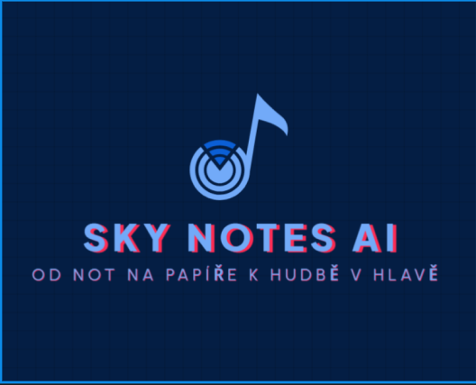

SKY NOTES AI
<<<<<<< HEAD
Hlavní stránka
=======
Domů
Rozpoznávání
Nastavení
>>>>>>> 264e89e1671517e2233a1a8d5c343b7c33d6a5a5
Nápověda
O nás
⚙️
✖
Povolení k přístupu
Povolení k přístupu:
Povolit použití kamery
Povolit použití mikrofonu
<<<<<<< HEAD

OD NOT NA PAPÍŘE K HUDBĚ V HLAVĚ
Nalezená nota je:
Zjistit notu z tónu
Zjistit notu z papíru
Začít nahrávat
Stop
Historie rozpoznaných not:
←
Nastavení
Povolení k přístupu:
Povolit použití kamery
Povolit použití mikrofonu
=======
OD NOT NA PAPÍŘE K HUDBĚ V HLAVĚ
Sky Notes AI je moderní webová aplikace, která vám pomůže rozpoznat hudební noty podle zvuku. Vyzkoušejte rozpoznávání tónů, prohlédněte si historii, nebo si přečtěte nápovědu.
Rozpoznávání
Nápověda
Nastavení
>>>>>>> 264e89e1671517e2233a1a8d5c343b7c33d6a5a5